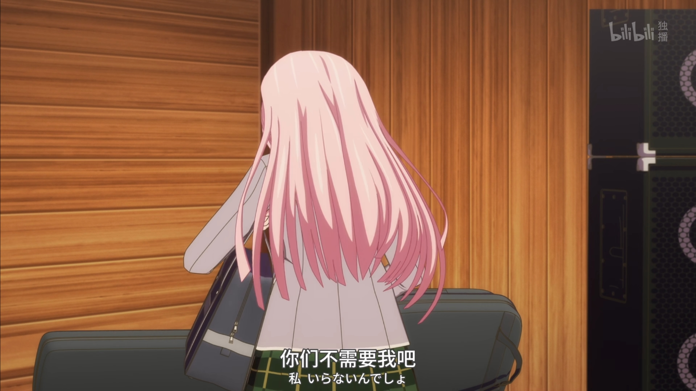
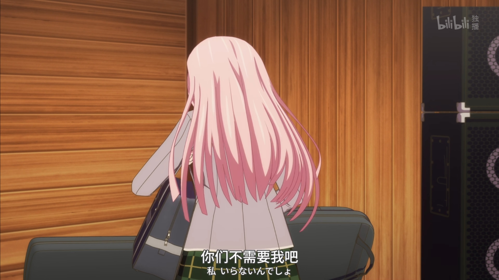

BanG Dream! It's MyGO!!!!!
#1 羽丘的不可思议女孩
羽丘の不思議ちゃん
爱音因为某些原因在黄金周开始前进入羽丘女子学园就读。她得知羽丘很流行组乐团后急着寻找组乐团的成员。而她邀请“羽丘的怪女生”灯组乐团后……
BanG Dream! It's MyGO!!!!!
#2 不会再邀请你了
もう誘わない
爱音虽然邀请灯组乐团，但却被她拒绝了。爱音为了找寻乐团的成员而动身前往Live House “RiNG”，却在那里和最不想见到的人重逢了。
“她啧了一下！”

BanG Dream! It's MyGO!!!!!
#3 优雅的呐喊
CRYCHIC
“好想成为人类啊。”
笨拙的灯一直无法融入周遭环境。在初三春天，她受到玉铃花的引导遇见了某个人。
BanG Dream! It's MyGO!!!!!
#4 一辈子喔!?
一生だよ！？
爱音从爽世那里听说CRYCHIC解散的经过后，她将灯、爽世、立希找来“RiNG”。
“来，开始沟通吧！”
BanG Dream! It's MyGO!!!!!
#5 我没有逃避！
逃げてない！
当初明明是保证在第一次演唱会结束前都不会解散才组成乐团的，但爱音却都不认真练习。面对这样的爱音，立希提出质问：
“我看你只是在逃避吧？”
BanG Dream! It's MyGO!!!!!
#6 怎么事到如今
なんで今更
“我要玩乐团！”
乐团的成员们都被突然出现的乐奈整得团团转。为参加演唱会所做的练习迟迟不顺利，立希也变得越来越焦躁。
BanG Dream! It's MyGO!!!!!
#7 就算今天的演唱会结束
今日のライブが終わっても
虽然过程手忙脚乱，但第一次演唱会的日子终于还是到来了。灯双脚颤抖地踏上了表演舞台。
“迷失方向我也想继续前进。”
BanG Dream! It's MyGO!!!!!
#8 为什么
どうして
爽世看到因为《春日影》擅自被人演奏而流下眼泪的祥子后大受打击，并失去了连络。那段期间，祥子将初华约出来见面。
“初华还是一样喜欢星星呢。”
 

BanG Dream! It's MyGO!!!!!
#9 解散
解散
爽世从小就一直扮演着周遭的人们所期望的角色。对爽世而言，CRYCHIC是比什么都重要的存在。
“那不是解散。”
BanG Dream! It's MyGO!!!!!
#10 一直迷失着
ずっと迷子
乐团成员变得四分五裂。始终没能整理好心理情绪的灯来到了星象馆，并遇见了初华。
“用诗感觉就能传达出去了。”


BanG Dream! It's MyGO!!!!!
#11 即使如此
それでも
灯的诗打动了爱音、乐奈、爽世、和立希的心。原以为事情终于落幕，但她们这时得知已经预约好下一场演唱会的档期。
“等一下，大家是不是把更重要的事忘记了？”
BanG Dream! It's MyGO!!!!!
#12 迷途之子!!!!!
It's my go!!!!!
五人终于重新集结，组成了“迷途之子乐团”。虽然总算准备好歌曲和服装，但五人最后还是手忙脚乱地迎接演唱会的到来。
“明明想好好办场演唱会的，又搞成这样！？”

BanG Dream! It's MyGO!!!!!
#13 唯一能相信的只有自己
信じられるのは我が身ひとつ
演唱会顺利结束，MyGO!!!!!的成员们在RiNG举行庆功宴。
“祝你幸福。”